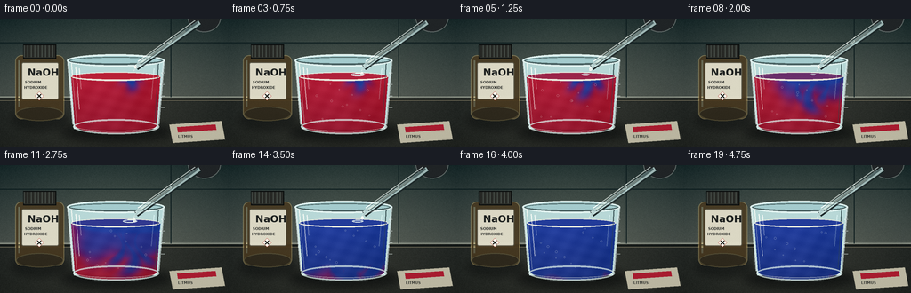
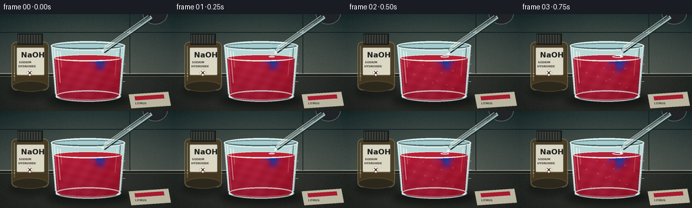

CODING AGENTS AS PIXEL WORLD MODELS
traex/GPT-5.6-Sol · material_0031
点击播放 · 原生 RGB 像素
逐轮保存的候选
回放视频、检查图与代码变化。
每份候选均可单独播放。实际图片检查记录在下方工具轨迹中。
候选 01播放与检查图
点击播放 · 原生 RGB 像素


展开代码变化
--- 上一保存版本
+++ 本次保存版本
@@ -0,0 +1,231 @@
+from pathlib import Path
+import math
+import numpy as np
+import cv2
+from PIL import Image, ImageDraw, ImageFont, ImageFilter
+import artifact_io
+
+# Deterministic procedural laboratory timelapse.
+W, H, N, FPS = 256, 144, 20, 4
+S = 3
+w, h = W*S, H*S
+rng = np.random.default_rng(3107)
+
+FONT_REG = "/usr/share/fonts/truetype/dejavu/DejaVuSans.ttf"
+FONT_BOLD = "/usr/share/fonts/truetype/dejavu/DejaVuSans-Bold.ttf"
+
+def font(px, bold=False):
+ try: return ImageFont.truetype(FONT_BOLD if bold else FONT_REG, px*S)
+ except: return ImageFont.load_default()
+
+def scbox(box): return tuple(int(round(v*S)) for v in box)
+def pts(seq): return [(int(x*S), int(y*S)) for x,y in seq]
+
+def overlay(base, layer):
+ return Image.alpha_composite(base.convert('RGBA'), layer.convert('RGBA'))
+
+def soft_ellipse(size, box, color, blur=3):
+ lay = Image.new('RGBA', size, (0,0,0,0)); d=ImageDraw.Draw(lay)
+ d.ellipse(scbox(box), fill=color)
+ if blur: lay=lay.filter(ImageFilter.GaussianBlur(blur*S))
+ return lay
+
+def smoothstep(x):
+ x=np.clip(x,0,1); return x*x*(3-2*x)
+
+# Persistent fine sensor grain: stable enough for a locked camera, not distracting.
+grain_small = rng.normal(0, 1.5, (H,W,1)).astype(np.float32)
+grain_hi = cv2.resize(grain_small, (w,h), interpolation=cv2.INTER_CUBIC)
+
+
+def render(k):
+ t=k/(N-1)
+ # Cool laboratory wall and charcoal bench, with gentle photographic vignetting.
+ yy,xx=np.mgrid[0:h,0:w]; X=xx/S; Y=yy/S
+ arr=np.zeros((h,w,3),np.float32)
+ wall_top=np.array([34,50,51]); wall_bottom=np.array([76,83,78])
+ u=np.clip(Y/93,0,1)[...,None]
+ arr=wall_top*(1-u)+wall_bottom*u
+ bench=np.array([38,42,40])[None,None,:] + (Y-89)[...,None]*np.array([.12,.09,.05])
+ arr=np.where((Y>=89)[...,None],bench,arr)
+ # pool of warm task light
+ light=np.exp(-(((X-133)/120)**2+((Y-48)/90)**2))[...,None]
+ arr += light*np.array([15,14,10])
+ vign=np.clip(((X-128)/180)**2+((Y-72)/105)**2,0,1)[...,None]
+ arr-=vign*np.array([18,17,16])
+ # Subtle bench grain and fixed camera texture
+ arr += grain_hi[...,None]
+ im=Image.fromarray(np.uint8(np.clip(arr,0,255)),'RGB').convert('RGBA')
+ d=ImageDraw.Draw(im)
+ # out-of-focus wall seams / bench edge
+ d.line(pts([(0,88),(256,88)]),fill=(159,165,151,42),width=1*S)
+ d.line(pts([(0,91),(256,91)]),fill=(8,14,14,100),width=2*S)
+ d.line(pts([(0,92),(256,92)]),fill=(96,93,77,55),width=1*S)
+ d.line(pts([(0,27),(256,27)]),fill=(12,28,30,25),width=1*S)
+ d.line(pts([(192,0),(192,88)]),fill=(14,29,31,22),width=1*S)
+ # blurred background glassware glints
+ bg=Image.new('RGBA',(w,h),(0,0,0,0)); bd=ImageDraw.Draw(bg)
+ bd.ellipse(scbox((204,25,250,78)),outline=(181,217,211,25),width=2*S)
+ bd.rectangle(scbox((207,51,247,88)),outline=(171,207,200,18),width=2*S)
+ bg=bg.filter(ImageFilter.GaussianBlur(4*S)); im=overlay(im,bg)
+ # cast shadows on bench
+ im=overlay(im,soft_ellipse((w,h),(68,116,194,139),(2,5,6,145),5))
+ im=overlay(im,soft_ellipse((w,h),(13,102,78,126),(6,8,8,100),4))
+ d=ImageDraw.Draw(im)
+
+ # Reagent bottle behind the beaker: clear silhouette, readable chemical label.
+ # dark amber glass body
+ bottle=Image.new('RGBA',(w,h),(0,0,0,0)); b=ImageDraw.Draw(bottle)
+ b.rounded_rectangle(scbox((17,41,72,113)),radius=7*S,fill=(73,57,31,215),outline=(177,157,102,130),width=1*S)
+ b.ellipse(scbox((18,99,71,115)),fill=(49,42,28,210),outline=(150,130,78,100),width=S)
+ b.rectangle(scbox((26,29,63,45)),fill=(40,42,38,255),outline=(9,12,12,255),width=S)
+ for x0 in range(27,63,4): b.line(pts([(x0,30),(x0,43)]),fill=(101,102,92,110),width=S)
+ b.rounded_rectangle(scbox((24,49,66,91)),radius=2*S,fill=(225,221,201,245),outline=(92,87,70,230),width=S)
+ b.text((31*S,54*S),'NaOH',font=font(11,True),fill=(28,31,30,255),stroke_width=0)
+ b.text((28*S,69*S),'SODIUM',font=font(4,True),fill=(45,47,44,255))
+ b.text((27*S,75*S),'HYDROXIDE',font=font(4,True),fill=(45,47,44,255))
+ # small hazard diamond
+ b.polygon(pts([(44,82),(49,87),(44,92),(39,87)]),fill=(246,246,234,255),outline=(177,37,28,255))
+ b.line(pts([(42,85),(46,89)]),fill=(35,35,31,255),width=S)
+ b.line(pts([(46,85),(42,89)]),fill=(35,35,31,255),width=S)
+ b.line(pts([(21,47),(21,99)]),fill=(226,205,143,72),width=2*S)
+ im=overlay(im,bottle)
+
+ # Beaker rear rim and faint clear body tint.
+ d=ImageDraw.Draw(im)
+ d.polygon(pts([(76,47),(184,47),(177,124),(83,124)]),fill=(184,216,215,18))
+ d.ellipse(scbox((75,40,185,54)),fill=(164,203,205,20),outline=(220,239,235,135),width=1*S)
+ d.ellipse(scbox((78,43,182,51)),outline=(77,103,103,160),width=1*S)
+
+ # Liquid interior mask and procedural mixing field.
+ mask=Image.new('L',(w,h),0); md=ImageDraw.Draw(mask)
+ md.polygon(pts([(80,65),(180,65),(176,119),(84,119)]),fill=255)
+ md.ellipse(scbox((84,110,176,129)),fill=255)
+ md.ellipse(scbox((80,60,180,70)),fill=255)
+ m=np.asarray(mask,dtype=np.float32)/255
+
+ # reaction starts after the first drops arrive; blue alkaline plumes sink and fan out.
+ p=smoothstep((t-0.055)/0.90)
+ # broad converted layer advances downward, with turbulent/wavy boundary
+ wav=4.2*np.sin((X-126)/8.5 + 7*p)+2.2*np.sin((X+2*Y)/15-4*p)
+ front=61+68*p
+ broad=1/(1+np.exp((Y-front-wav)/3.8))
+ broad *= 1/(1+np.exp((np.abs(X-146)-(6+88*p))/5.0))
+ # narrow descending ink-like fingers from the impact point
+ f=np.zeros((h,w),np.float32)
+ centers=[(145,0.0,5.5),(135,1.4,4.5),(156,-1.1,4.8)]
+ for base,phase,width0 in centers:
+ cy=np.clip(Y-63,0,None)
+ cx=base + (4+5*p)*np.sin(cy/9+phase+5*p) + (cy/50)*(base-145)*.55
+ plume_x=np.exp(-((X-cx)/(width0+cy*.10))**2)
+ length=10+70*p + (6 if base==145 else -5)
+ plume_y=1/(1+np.exp((Y-(64+length))/3.0))
+ start=1/(1+np.exp(-(Y-60)/2.2))
+ f=np.maximum(f,plume_x*plume_y*start)
+ top_spread=np.exp(-((Y-65)/6.5)**2)*np.exp(-((X-145)/(7+72*p))**2)
+ converted=np.clip(np.maximum(f*.96, broad*.91)+top_spread*.9,0,1)
+ # late homogeneous mixing guarantees the clear red -> blue transformation.
+ converted=np.clip(converted + smoothstep((p-.62)/.38)*.45,0,1)
+ converted*=m
+
+ red=np.array([174,22,46],np.float32)
+ purple=np.array([98,28,108],np.float32)
+ blue=np.array([25,55,150],np.float32)
+ # two-stage litmus color path through vivid violet
+ q=converted[...,None]
+ c1=red*(1-np.minimum(q*2,1))+purple*np.minimum(q*2,1)
+ q2=np.clip(q*2-1,0,1)
+ liquid=c1*(1-q2)+blue*q2
+ # liquid depth, internal waves and caustics
+ depth=np.clip((Y-61)/70,0,1)[...,None]
+ liquid*=1-0.20*depth
+ flow=(3*np.sin(X*.29+Y*.17+k*.45)+2*np.sin(Y*.51-X*.12-k*.3))[...,None]
+ liquid+=flow
+ # bright central transmitted glow
+ liquid += np.exp(-((X-117)/39)**2)[...,None]*np.array([10,8,12])
+ rgba=np.dstack((np.clip(liquid,0,255), m*242)).astype(np.uint8)
+ im=overlay(im,Image.fromarray(rgba,'RGBA'))
+
+ # Meniscus (its tint follows average top conversion).
+ d=ImageDraw.Draw(im)
+ surf_q=float(np.clip(p*1.45,0,1))
+ sr=np.array([185,33,55])*(1-surf_q)+np.array([35,60,154])*surf_q
+ d.ellipse(scbox((80,60,180,70)),fill=tuple(sr.astype(int).tolist())+(215,),outline=(228,231,219,110),width=S)
+ # Inner meniscus shadow / tiny ripples from dosing
+ d.arc(scbox((82,62,178,69)),0,180,fill=(245,238,224,115),width=S)
+ ripple_amp=max(0,1-((k%4)/3))
+ if k>0 and k<16:
+ rr=3+5*((k%4)/3)
+ d.ellipse(scbox((146-rr,63-rr*.22,146+rr,63+rr*.22)),outline=(225,239,238,int(110*ripple_amp)),width=S)
+
+ # Suspended microbubbles emphasize chemical mixing/time-lapse activity.
+ if k>=2:
+ bubble_layer=Image.new('RGBA',(w,h),(0,0,0,0)); bu=ImageDraw.Draw(bubble_layer)
+ for j in range(12):
+ bx=92+((j*29+11)%74)+4*math.sin(j*1.7+k*.33)
+ by=116-((j*13+k*(1.1+j%3))%45)
+ r=.55+(j%3)*.28
+ if 84<bx<176 and 68<by<119:
+ bu.ellipse(scbox((bx-r,by-r,bx+r,by+r)),outline=(235,241,231,110),width=max(1,S//2))
+ im=overlay(im,bubble_layer)
+
+ # Strong glass geometry and highlights drawn in front of fluid.
+ gl=Image.new('RGBA',(w,h),(0,0,0,0)); g=ImageDraw.Draw(gl)
+ g.line(pts([(76,47),(82,119)]),fill=(224,241,239,180),width=2*S)
+ g.line(pts([(184,47),(178,119)]),fill=(218,237,236,170),width=2*S)
+ g.line(pts([(80,48),(86,117)]),fill=(255,255,248,62),width=S)
+ g.line(pts([(178,49),(174,116)]),fill=(45,68,72,105),width=S)
+ g.ellipse(scbox((82,113,179,130)),outline=(219,236,232,185),width=2*S)
+ g.arc(scbox((85,116,176,127)),0,180,fill=(255,255,247,95),width=S)
+ # bright vertical specular strokes
+ g.line(pts([(85,55),(89,102)]),fill=(255,255,249,138),width=S)
+ g.line(pts([(89,56),(91,79)]),fill=(255,255,252,75),width=S)
+ g.line(pts([(173,56),(170,91)]),fill=(220,244,243,58),width=S)
+ # rim redrawn crisp
+ g.ellipse(scbox((75,40,185,54)),outline=(226,242,240,190),width=2*S)
+ g.arc(scbox((77,42,183,52)),0,180,fill=(70,91,92,190),width=S)
+ # graduation marks
+ for yy0,long in [(61,1),(74,0),(87,1),(100,0)]:
+ x1=181 if long else 179
+ g.line(pts([(x1,yy0),(185,yy0)]),fill=(229,241,238,115),width=S)
+ im=overlay(im,gl)
+
+ # Glass pipette in foreground, aimed directly at the solution.
+ pp=Image.new('RGBA',(w,h),(0,0,0,0)); pd=ImageDraw.Draw(pp)
+ # squeeze bulb cropped at top-right
+ pd.ellipse(scbox((211,-17,248,15)),fill=(32,36,38,255),outline=(112,119,117,190),width=S)
+ pd.line(pts([(224,5),(153,55)]),fill=(24,34,36,170),width=7*S)
+ pd.line(pts([(224,4),(153,54)]),fill=(191,218,216,200),width=5*S)
+ pd.line(pts([(222,4),(153,54)]),fill=(92,114,115,200),width=3*S)
+ pd.line(pts([(219,2),(155,48)]),fill=(247,255,249,150),width=S)
+ # colorless liquid column and needle-like end
+ pd.line(pts([(208,14),(156,51)]),fill=(214,231,223,110),width=2*S)
+ pd.polygon(pts([(155,49),(150,59),(158,52)]),fill=(178,205,204,210),outline=(237,247,241,180))
+ im=overlay(im,pp)
+
+ # Falling caustic/colorless NaOH drop; repeating drops make "is added" unmistakable.
+ if k < 16:
+ phase=(k%4)/4
+ dy=54+phase*11
+ dx=152-1.5*phase
+ drop=Image.new('RGBA',(w,h),(0,0,0,0)); dr=ImageDraw.Draw(drop)
+ dr.ellipse(scbox((dx-1.45,dy-2.1,dx+1.45,dy+2.0)),fill=(211,232,228,215),outline=(255,255,247,230),width=S)
+ dr.ellipse(scbox((dx-.5,dy-1.3,dx+.2,dy-.5)),fill=(255,255,255,245))
+ im=overlay(im,drop)
+
+ # A litmus test-paper packet in the corner subtly anchors the experiment context.
+ card=Image.new('RGBA',(w,h),(0,0,0,0)); cd=ImageDraw.Draw(card)
+ cd.polygon(pts([(190,119),(249,115),(253,136),(194,140)]),fill=(219,213,188,210),outline=(89,89,77,180))
+ cd.polygon(pts([(199,122),(242,119),(243,125),(200,128)]),fill=(178,27,48,235))
+ cd.text((200*S,130*S),'LITMUS',font=font(4,True),fill=(55,56,51,230))
+ im=overlay(im,card)
+
+ # downsample for natural anti-aliasing and add restrained per-frame sensor noise.
+ rgb=np.asarray(im.convert('RGB').resize((W,H),Image.Resampling.LANCZOS)).astype(np.float32)
+ frame_noise=np.random.default_rng(9000+k).normal(0,.45,(H,W,1))
+ rgb=np.clip(rgb+frame_noise,0,255).astype(np.uint8)
+ return rgb
+
+frames=np.stack([render(i) for i in range(N)],axis=0)
+artifact_io.save(frames, Path(__file__).resolve().parent)
+print('saved',frames.shape,frames.dtype)
可观测工具轨迹
实际执行的命令与返回图片。
命令 1exit 0
/bin/bash -lc "cat prompt.txt && printf '\\n--- RULES ---\\n' && cat GENERATION_RULES.md && printf '\\n--- SPEC ---\\n' && cat task_spec.json"
命令 2exit 1
/bin/bash -lc "find . -maxdepth 2 -type f -printf '%p %s bytes\\n' | sort && printf '\\nTools:\\n' && command -v ffmpeg && command -v python3 && python3 - <<'PY' mods=['cv2','numpy','PIL','imageio','cairo','moviepy'] for m in mods: try: x=__import__(m); print(m,'OK',getattr(x,'__version__','')) except Exception as e: print(m,'NO',e) PY"
命令 3exit 0
/bin/bash -lc 'cat artifact_io.py && ls -la'
命令 4exit 0
/bin/bash -lc "python3 - <<'PY' mods=['cv2','numpy','PIL','imageio','cairo','moviepy','scipy'] for m in mods: try: x=__import__(m); print(m,'OK',getattr(x,'__version__','')) except Exception as e: print(m,'NO',repr(e)) PY command -v ffmpeg || true"
命令 5exit 1
/bin/bash -lc "cat > generate.py <<'PY'
from pathlib import Path
import math
import numpy as np
import cv2
from PIL import Image, ImageDraw, ImageFont, ImageFilter
import artifact_io
# Deterministic procedural laboratory timelapse.
W, H, N, FPS = 256, 144, 20, 4
S = 3
w, h = W*S, H*S
rng = np.random.default_rng(3107)
FONT_REG = \"/usr/share/fonts/truetype/dejavu/DejaVuSans.ttf\"
FONT_BOLD = \"/usr/share/fonts/truetype/dejavu/DejaVuSans-Bold.ttf\"
def font(px, bold=False):
try: return ImageFont.truetype(FONT_BOLD if bold else FONT_REG, px*S)
except: return ImageFont.load_default()
def scbox(box): return tuple(int(round(v*S)) for v in box)
def pts(seq): return [(int(x*S), int(y*S)) for x,y in seq]
def overlay(base, layer):
return Image.alpha_composite(base.convert('RGBA'), layer.convert('RGBA'))
def soft_ellipse(size, box, color, blur=3):
lay = Image.new('RGBA', size, (0,0,0,0)); d=ImageDraw.Draw(lay)
d.ellipse(scbox(box), fill=color)
if blur: lay=lay.filter(ImageFilter.GaussianBlur(blur*S))
return lay
def smoothstep(x):
x=np.clip(x,0,1); return x*x*(3-2*x)
# Persistent fine sensor grain: stable enough for a locked camera, not distracting.
grain_small = rng.normal(0, 1.5, (H,W,1)).astype(np.float32)
grain_hi = cv2.resize(grain_small, (w,h), interpolation=cv2.INTER_CUBIC)
def render(k):
t=k/(N-1)
# Cool laboratory wall and charcoal bench, with gentle photographic vignetting.
yy,xx=np.mgrid[0:h,0:w]; X=xx/S; Y=yy/S
arr=np.zeros((h,w,3),np.float32)
wall_top=np.array([34,50,51]); wall_bottom=np.array([76,83,78])
u=np.clip(Y/93,0,1)[...,None]
arr=wall_top*(1-u)+wall_bottom*u
bench=np.array([38,42,40])[None,None,:] + (Y-89)[...,None]*np.array([.12,.09,.05])
arr=np.where((Y>=89)[...,None],bench,arr)
# pool of warm task light
light=np.exp(-(((X-133)/120)**2+((Y-48)/90)**2))[...,None]
arr += light*np.array([15,14,10])
vign=np.clip(((X-128)/180)**2+((Y-72)/105)**2,0,1)[...,None]
arr-=vign*np.array([18,17,16])
# Subtle bench grain and fixed camera texture
arr += grain_hi
im=Image.fromarray(np.uint8(np.clip(arr,0,255)),'RGB').convert('RGBA')
d=ImageDraw.Draw(im)
# out-of-focus wall seams / bench edge
d.line(pts([(0,88),(256,88)]),fill=(159,165,151,42),width=1*S)
d.line(pts([(0,91),(256,91)]),fill=(8,14,14,100),width=2*S)
d.line(pts([(0,92),(256,92)]),fill=(96,93,77,55),width=1*S)
d.line(pts([(0,27),(256,27)]),fill=(12,28,30,25),width=1*S)
d.line(pts([(192,0),(192,88)]),fill=(14,29,31,22),width=1*S)
# blurred background glassware glints
bg=Image.new('RGBA',(w,h),(0,0,0,0)); bd=ImageDraw.Draw(bg)
bd.ellipse(scbox((204,25,250,78)),outline=(181,217,211,25),width=2*S)
bd.rectangle(scbox((207,51,247,88)),outline=(171,207,200,18),width=2*S)
bg=bg.filter(ImageFilter.GaussianBlur(4*S)); im=overlay(im,bg)
# cast shadows on bench
im=overlay(im,soft_ellipse((w,h),(68,116,194,139),(2,5,6,145),5))
im=overlay(im,soft_ellipse((w,h),(13,102,78,126),(6,8,8,100),4))
d=ImageDraw.Draw(im)
# Reagent bottle behind the beaker: clear silhouette, readable chemical label.
# dark amber glass body
bottle=Image.new('RGBA',(w,h),(0,0,0,0)); b=ImageDraw.Draw(bottle)
b.rounded_rectangle(scbox((17,41,72,113)),radius=7*S,fill=(73,57,31,215),outline=(177,157,102,130),width=1*S)
b.ellipse(scbox((18,99,71,115)),fill=(49,42,28,210),outline=(150,130,78,100),width=S)
b.rectangle(scbox((26,29,63,45)),fill=(40,42,38,255),outline=(9,12,12,255),width=S)
for x0 in range(27,63,4): b.line(pts([(x0,30),(x0,43)]),fill=(101,102,92,110),width=S)
b.rounded_rectangle(scbox((24,49,66,91)),radius=2*S,fill=(225,221,201,245),outline=(92,87,70,230),width=S)
b.text((31*S,54*S),'NaOH',font=font(11,True),fill=(28,31,30,255),stroke_width=0)
b.text((28*S,69*S),'SODIUM',font=font(4,True),fill=(45,47,44,255))
b.text((27*S,75*S),'HYDROXIDE',font=font(4,True),fill=(45,47,44,255))
# small hazard diamond
b.polygon(pts([(44,82),(49,87),(44,92),(39,87)]),fill=(246,246,234,255),outline=(177,37,28,255))
b.line(pts([(42,85),(46,89)]),fill=(35,35,31,255),width=S)
b.line(pts([(46,85),(42,89)]),fill=(35,35,31,255),width=S)
b.line(pts([(21,47),(21,99)]),fill=(226,205,143,72),width=2*S)
im=overlay(im,bottle)
# Beaker rear rim and faint clear body tint.
d=ImageDraw.Draw(im)
d.polygon(pts([(76,47),(184,47),(177,124),(83,124)]),fill=(184,216,215,18))
d.ellipse(scbox((75,40,185,54)),fill=(164,203,205,20),outline=(220,239,235,135),width=1*S)
d.ellipse(scbox((78,43,182,51)),outline=(77,103,103,160),width=1*S)
# Liquid interior mask and procedural mixing field.
mask=Image.new('L',(w,h),0); md=ImageDraw.Draw(mask)
md.polygon(pts([(80,65),(180,65),(176,119),(84,119)]),fill=255)
md.ellipse(scbox((84,110,176,129)),fill=255)
md.ellipse(scbox((80,60,180,70)),fill=255)
m=np.asarray(mask,dtype=np.float32)/255
# reaction starts after the first drops arrive; blue alkaline plumes sink and fan out.
p=smoothstep((t-0.055)/0.90)
# broad converted layer advances downward, with turbulent/wavy boundary
wav=4.2*np.sin((X-126)/8.5 + 7*p)+2.2*np.sin((X+2*Y)/15-4*p)
front=61+68*p
broad=1/(1+np.exp((Y-front-wav)/3.8))
broad *= 1/(1+np.exp((np.abs(X-146)-(6+88*p))/5.0))
# narrow descending ink-like fingers from the impact point
f=np.zeros((h,w),np.float32)
centers=[(145,0.0,5.5),(135,1.4,4.5),(156,-1.1,4.8)]
for base,phase,width0 in centers:
cy=np.clip(Y-63,0,None)
cx=base + (4+5*p)*np.sin(cy/9+phase+5*p) + (cy/50)*(base-145)*.55
plume_x=np.exp(-((X-cx)/(width0+cy*.10))**2)
length=10+70*p + (6 if base==145 else -5)
plume_y=1/(1+np.exp((Y-(64+length))/3.0))
start=1/(1+np.exp(-(Y-60)/2.2))
f=np.maximum(f,plume_x*plume_y*start)
top_spread=np.exp(-((Y-65)/6.5)**2)*np.exp(-((X-145)/(7+72*p))**2)
converted=np.clip(np.maximum(f*.96, broad*.91)+top_spread*.9,0,1)
# late homogeneous mixing guarantees the clear red -> blue transformation.
converted=np.clip(converted + smoothstep((p-.62)/.38)*.45,0,1)
converted*=m
red=np.array([174,22,46],np.float32)
purple=np.array([98,28,108],np.float32)
blue=np.array([25,55,150],np.float32)
# two-stage litmus color path through vivid violet
q=converted[...,None]
c1=red*(1-np.minimum(q*2,1))+purple*np.minimum(q*2,1)
q2=np.clip(q*2-1,0,1)
liquid=c1*(1-q2)+blue*q2
# liquid depth, internal waves and caustics
depth=np.clip((Y-61)/70,0,1)[...,None]
liquid*=1-0.20*depth
flow=(3*np.sin(X*.29+Y*.17+k*.45)+2*np.sin(Y*.51-X*.12-k*.3))[...,None]
liquid+=flow
# bright central transmitted glow
liquid += np.exp(-((X-117)/39)**2)[...,None]*np.array([10,8,12])
rgba=np.dstack((np.clip(liquid,0,255), m*242)).astype(np.uint8)
im=overlay(im,Image.fromarray(rgba,'RGBA'))
# Meniscus (its tint follows average top conversion).
d=ImageDraw.Draw(im)
surf_q=float(np.clip(p*1.45,0,1))
sr=np.array([185,33,55])*(1-surf_q)+np.array([35,60,154])*surf_q
d.ellipse(scbox((80,60,180,70)),fill=tuple(sr.astype(int).tolist())+(215,),outline=(228,231,219,110),width=S)
# Inner meniscus shadow / tiny ripples from dosing
d.arc(scbox((82,62,178,69)),0,180,fill=(245,238,224,115),width=S)
ripple_amp=max(0,1-((k%4)/3))
if k>0 and k<16:
rr=3+5*((k%4)/3)
d.ellipse(scbox((146-rr,63-rr*.22,146+rr,63+rr*.22)),outline=(225,239,238,int(110*ripple_amp)),width=S)
# Suspended microbubbles emphasize chemical mixing/time-lapse activity.
if k>=2:
bubble_layer=Image.new('RGBA',(w,h),(0,0,0,0)); bu=ImageDraw.Draw(bubble_layer)
for j in range(12):
bx=92+((j*29+11)%74)+4*math.sin(j*1.7+k*.33)
by=116-((j*13+k*(1.1+j%3))%45)
r=.55+(j%3)*.28
if 84<bx<176 and 68<by<119:
bu.ellipse(scbox((bx-r,by-r,bx+r,by+r)),outline=(235,241,231,110),width=max(1,S//2))
im=overlay(im,bubble_layer)
# Strong glass geometry and highlights drawn in front of fluid.
gl=Image.new('RGBA',(w,h),(0,0,0,0)); g=ImageDraw.Draw(gl)
g.line(pts([(76,47),(82,119)]),fill=(224,241,239,180),width=2*S)
g.line(pts([(184,47),(178,119)]),fill=(218,237,236,170),width=2*S)
g.line(pts([(80,48),(86,117)]),fill=(255,255,248,62),width=S)
g.line(pts([(178,49),(174,116)]),fill=(45,68,72,105),width=S)
g.ellipse(scbox((82,113,179,130)),outline=(219,236,232,185),width=2*S)
g.arc(scbox((85,116,176,127)),0,180,fill=(255,255,247,95),width=S)
# bright vertical specular strokes
g.line(pts([(85,55),(89,102)]),fill=(255,255,249,138),width=S)
g.line(pts([(89,56),(91,79)]),fill=(255,255,252,75),width=S)
g.line(pts([(173,56),(170,91)]),fill=(220,244,243,58),width=S)
# rim redrawn crisp
g.ellipse(scbox((75,40,185,54)),outline=(226,242,240,190),width=2*S)
g.arc(scbox((77,42,183,52)),0,180,fill=(70,91,92,190),width=S)
# graduation marks
for yy0,long in [(61,1),(74,0),(87,1),(100,0)]:
x1=181 if long else 179
g.line(pts([(x1,yy0),(185,yy0)]),fill=(229,241,238,115),width=S)
im=overlay(im,gl)
# Glass pipette in foreground, aimed directly at the solution.
pp=Image.new('RGBA',(w,h),(0,0,0,0)); pd=ImageDraw.Draw(pp)
# squeeze bulb cropped at top-right
pd.ellipse(scbox((211,-17,248,15)),fill=(32,36,38,255),outline=(112,119,117,190),width=S)
pd.line(pts([(224,5),(153,55)]),fill=(24,34,36,170),width=7*S)
pd.line(pts([(224,4),(153,54)]),fill=(191,218,216,200),width=5*S)
pd.line(pts([(222,4),(153,54)]),fill=(92,114,115,200),width=3*S)
pd.line(pts([(219,2),(155,48)]),fill=(247,255,249,150),width=S)
# colorless liquid column and needle-like end
pd.line(pts([(208,14),(156,51)]),fill=(214,231,223,110),width=2*S)
pd.polygon(pts([(155,49),(150,59),(158,52)]),fill=(178,205,204,210),outline=(237,247,241,180))
im=overlay(im,pp)
# Falling caustic/colorless NaOH drop; repeating drops make \"is added\" unmistakable.
if k < 16:
phase=(k%4)/4
dy=54+phase*11
dx=152-1.5*phase
drop=Image.new('RGBA',(w,h),(0,0,0,0)); dr=ImageDraw.Draw(drop)
dr.ellipse(scbox((dx-1.45,dy-2.1,dx+1.45,dy+2.0)),fill=(211,232,228,215),outline=(255,255,247,230),width=S)
dr.ellipse(scbox((dx-.5,dy-1.3,dx+.2,dy-.5)),fill=(255,255,255,245))
im=overlay(im,drop)
# A litmus test-paper packet in the corner subtly anchors the experiment context.
card=Image.new('RGBA',(w,h),(0,0,0,0)); cd=ImageDraw.Draw(card)
cd.polygon(pts([(190,119),(249,115),(253,136),(194,140)]),fill=(219,213,188,210),outline=(89,89,77,180))
cd.polygon(pts([(199,122),(242,119),(243,125),(200,128)]),fill=(178,27,48,235))
cd.text((200*S,130*S),'LITMUS',font=font(4,True),fill=(55,56,51,230))
im=overlay(im,card)
# downsample for natural anti-aliasing and add restrained per-frame sensor noise.
rgb=np.asarray(im.convert('RGB').resize((W,H),Image.Resampling.LANCZOS)).astype(np.float32)
frame_noise=np.random.default_rng(9000+k).normal(0,.45,(H,W,1))
rgb=np.clip(rgb+frame_noise,0,255).astype(np.uint8)
return rgb
frames=np.stack([render(i) for i in range(N)],axis=0)
artifact_io.save(frames, Path(__file__).resolve().parent)
print('saved',frames.shape,frames.dtype)
PY
python3 generate.py"命令 6exit 0
/bin/bash -lc "python3 - <<'PY'
p='generate.py'
s=open(p).read().replace('arr += grain_hi\\n','arr += grain_hi[...,None]\\n')
open(p,'w').write(s)
PY
python3 generate.py"命令 7exit 0
/bin/bash -lc "python3 - <<'PY'
from PIL import Image
im=Image.open('inspection.png')
print(im.size, im.mode)
PY
ls -lh pixels.npz index.html inspection.png transition_check.png frames/*.png | tail -8"保存候选 1 份；完成命令 7 次；可验证图片返回 0 张。原始 API 响应与完整日志保留在本地。